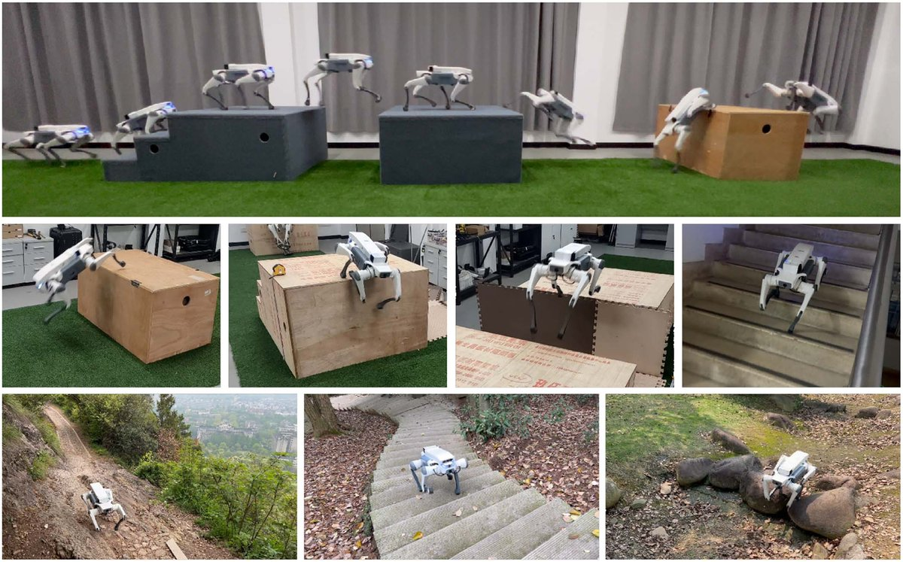
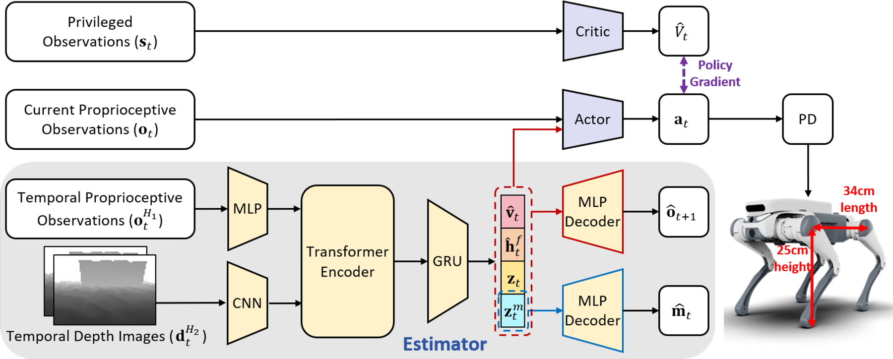
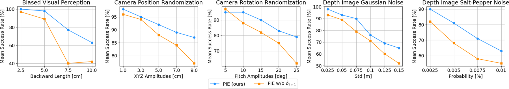
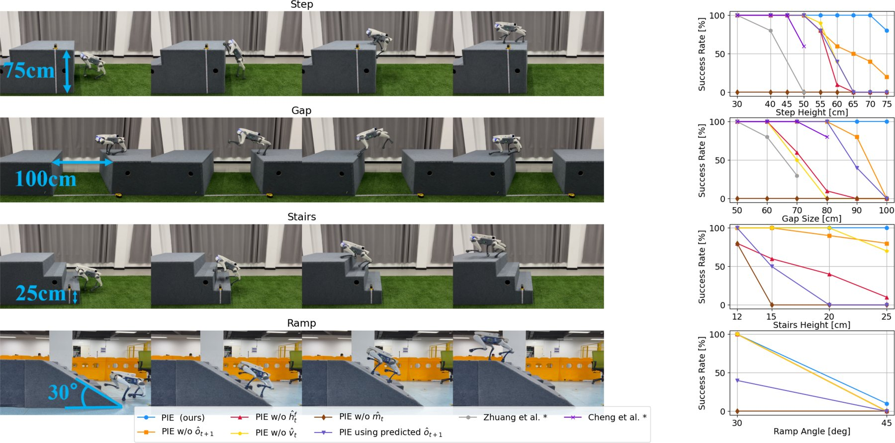
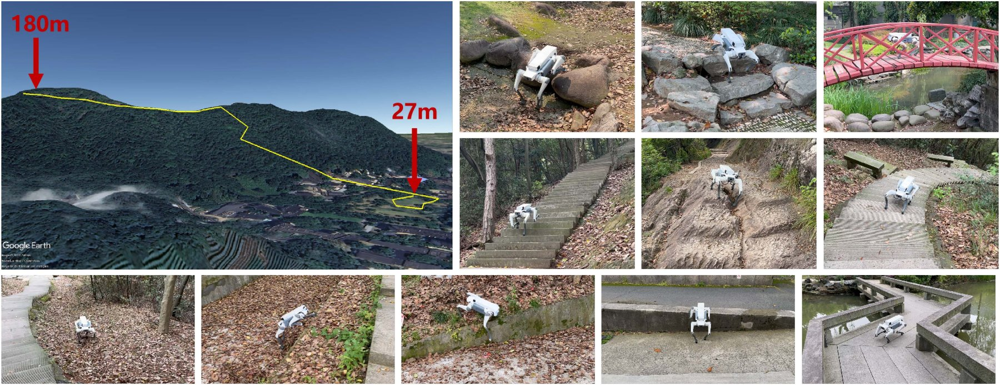
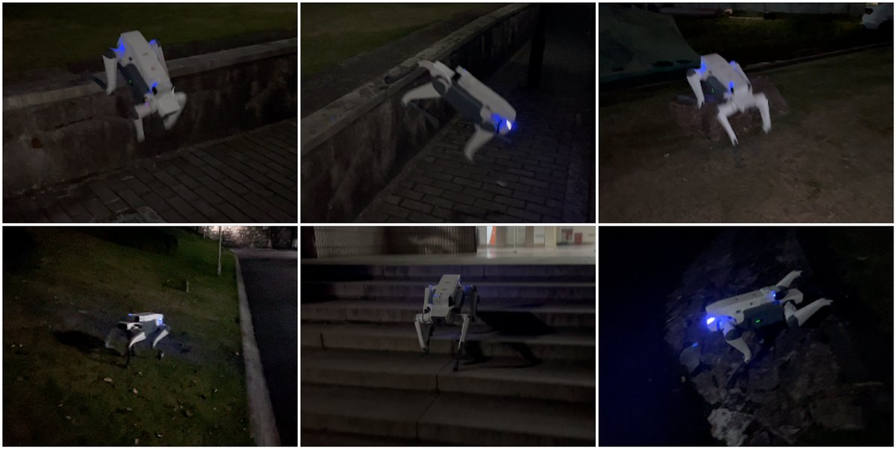
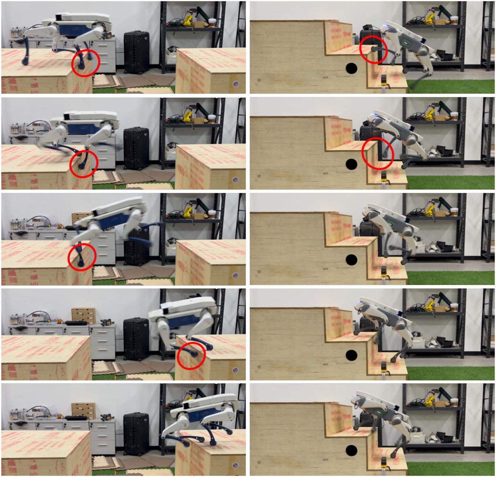

flowchart TD
subgraph SENSE["센서 (실기)"]
direction LR
IMU["IMU<br/>ω_t, g_t"]
ENC["관절 엔코더<br/>θ_t, θ̇_t"]
CMD["속도 명령 c_t"]
PREV["이전 행동 a_t-1"]
CAM["D435i depth<br/>10 Hz"]
end
IMU --> OT
ENC --> OT
CMD --> OT
PREV --> OT
OT["o_t (45)"] --> HIST["고유감각 history 10스텝"]
CAM --> DH["depth 2프레임 (채널 stack)"]
subgraph EST["Estimator"]
HIST --> MLP["MLP"]
DH --> CNN["CNN"]
MLP --> TF["Shared Transformer Encoder"]
CNN --> TF
TF --> GRU["GRU (기억)"]
GRU --> VEC["v̂_t · ĥ_t^f · z_t · z_t^m"]
end
OT --> ACT["Actor MLP"]
VEC --> ACT
ACT --> A["a_t (12)"]
A --> PD["θ_target = θ_stand + a_t → 관절 PD"]
style SENSE fill:#f6f8fa,stroke:#c9d1d9,color:#24292f
style EST fill:#eef4fb,stroke:#9fb3c8,color:#24292f
Note🔗 Links
- 📄 Paper (arXiv)
- 📄 IEEE RA-L (DOI)
- 📦 Code: 공개되지 않음 (2026-10 기준, arXiv와 논문 본문 모두 코드 링크 없음)
Note
PIE: Parkour with Implicit-Explicit Learning Framework for Legged Robots (Luo et al., IEEE RA-L 2024)
본 포스트는 PIE의 전체 학습 프레임워크를 분석합니다. 특히 각 관측값이 어떤 센서에서 오는지, Estimator가 state를 어떻게 가공해서 Policy에 넣는지, 그리고 Teacher–Student 없이 one-stage로 학습하는 구조를 개발 관점에서 정리합니다. 학습 원리(PPO, VAE의 수학적 배경)는 다음 포스트에서 다룹니다.
Tip한눈에 보기
- One-stage 학습: Teacher–Student를 쓰지 않습니다. Asymmetric actor-critic(PPO)과 Estimator(회귀)를 동시에 학습합니다.
- Actor 입력 = 고유감각 관측 \(\mathbf{o}_t\)(45차원) + Estimator 출력 4종 \([\hat{\mathbf{v}}_t, \hat{\mathbf{h}}^f_t, \mathbf{z}_t, \mathbf{z}^m_t]\).
- Estimator = depth 2프레임(CNN) + 고유감각 10스텝(MLP) → Transformer(cross-modal) → GRU(기억) → 4개 벡터.
- Dual-level: 이해 방식(지형의 explicit 복원 vs 다음 상태의 implicit 예측) × 표현 방식(latent vs 물리량).
- 생성모델 요소: \(\mathbf{z}_t\)는 VAE latent(KL로 \(\mathcal{N}(0, I)\)에 정렬), \(\mathbf{z}^m_t\)는 height map을 복원하는 autoencoder latent입니다.
- 학습 비용: Isaac Gym 4096 env, 10,000 iteration을 RTX 4090에서 20시간 이내.
1 배경 및 문제 정의

Parkour는 달리기, 점프, 기어오르기를 섞어 장애물을 빠르게 통과하는 과제입니다. 로봇에게는 빠른 속도에서의 균형 유지, 바뀌는 지형에 대한 실시간 인지, 정밀한 동작 조정이 동시에 필요합니다.
Blind locomotion(고유감각만 사용)은 지형을 밟아 본 뒤에야 암묵적으로 추론할 수 있습니다. 높은 단차나 넓은 gap처럼 미리 힘을 모아야 하는 동작에는 depth camera, LiDAR 같은 외부 센서가 필요합니다. 저자들은 기존 parkour 연구의 한계를 세 가지로 정리합니다.
- 외부 센서의 지연과 노이즈: 실시간으로 정밀한 지형 추정이 어렵고, 특히 발이 자주 걸리는 모서리(edge)에서 치명적입니다.
- 2단계(Two-stage) 학습: Teacher를 모방하는 단계에서 정보 손실이 생기고 학습 과정이 복잡해집니다.
- 여러 동작의 통합: 단순한 학습 과정과 보상 함수로 여러 parkour 동작을 하나의 네트워크에 담기 어렵습니다.
| 기존 연구 | 구조 | PIE 저자가 지적한 한계 |
|---|---|---|
| Hoeller et al. (ANYmal parkour) | 계층형: 인지 → navigation → locomotion | 비정형 지형에서 occupancy voxel 오류, 높은 학습 비용, 낮은 확장성 |
| Zhuang et al. (Robot Parkour Learning) | 다단계, soft/hard constraint, depth student | privileged 정보가 시뮬레이션 장애물의 기하 형상에 강하게 묶임 |
| Cheng et al. (Extreme Parkour) | Teacher–Student, teacher 입력에 waypoint | waypoint를 지형마다 사람이 지정 |
| Agarwal et al. | Teacher–Student, depth → 관절각 | 2단계 모방 과정의 정보 손실 |
PIE의 접근: “Teacher를 따라 하게 하지 말고, 하나의 정책이 처음부터 implicit 추정과 explicit 추정을 함께 배우게 하자”
1.1 Contribution
- Dual-level implicit-explicit estimation을 쓰는 one-stage parkour 학습 프레임워크.
- 로봇 높이의 3배 단차(0.75 m) 오르내리기, 로봇 길이의 3배 gap(1 m), 로봇 높이만 한 계단(0.25 m).
- 별도 fine-tuning 없이 실내와 실외 모두에서 zero-shot sim-to-real.
2 하드웨어와 센서 구성
PIE를 이해하는 출발점으로, 각 관측값이 어떤 센서에서 오는지 먼저 정리합니다.
| 항목 | 내용 |
|---|---|
| 로봇 | DEEP Robotics Lite3 (12 DoF, 12.7 kg) |
| 크기 | 서 있을 때 thigh 관절 높이 25 cm, 앞뒤 thigh 관절 사이 거리 34 cm |
| 무릎 최대 토크 | 30.5 Nm |
| Depth 카메라 | Intel RealSense D435i 한 대 (onboard, 전방 egocentric), raw depth 10 Hz |
| 연산 장치 | Rockchip RK3588. 이미지 후처리와 네트워크 추론을 모두 onboard에서 수행 |
| 제어 주기 | 관절 action 50 Hz |
| 비교 기준 로봇 | Unitree A1 (thigh 높이 26 cm, 거리 40 cm, 12 kg, 무릎 33.5 Nm). 크기가 비슷해 기존 연구와 상대 비교 가능 |
| 센서 | 측정값 | 쓰이는 곳 |
|---|---|---|
| IMU | 몸통 각속도 \(\boldsymbol{\omega}_t\), body frame 중력 방향 \(\mathbf{g}_t\) | \(\mathbf{o}_t\) (Actor, Critic, Estimator history) |
| 관절 엔코더 | 관절각 \(\boldsymbol{\theta}_t\), 관절 각속도 \(\dot{\boldsymbol{\theta}}_t\) | \(\mathbf{o}_t\) |
| 정책 자신 | 이전 행동 \(\mathbf{a}_{t-1}\) | \(\mathbf{o}_t\) |
| 조작자 | 속도 명령 \(\mathbf{c}_t\) | \(\mathbf{o}_t\) |
| RealSense D435i | depth 이미지 | Estimator 입력 \(\mathbf{d}_t\) (2프레임) |
| 시뮬레이션 전용 | 실제 몸통 속도 \(\mathbf{v}_t\), height map \(\mathbf{m}_t\), foot clearance \(\mathbf{h}^f_t\), 다음 관측 \(\mathbf{o}_{t+1}\) | Critic 입력, Estimator 정답(label) |
NoteDepth 10 Hz와 제어 50 Hz의 차이
Depth는 10 Hz, 제어는 50 Hz이므로 depth 한 프레임이 제어 5스텝에 걸쳐 쓰이는 구조로 보입니다. 다만 논문은 이 비동기 처리 방법(최신 프레임 재사용인지, 시뮬레이션에서도 같은 주기로 depth를 갱신하는지)을 설명하지 않습니다. 시뮬레이션에서는 도메인 랜덤화 항목 중 system delay 0–15 ms와 카메라 위치·pitch·FOV 랜덤화로 실기 depth의 불확실성을 흉내 냅니다.
3 전체 프레임워크

PIE는 세 개의 하위 네트워크로 구성됩니다.
- Actor: 배포 시 실제로 얻을 수 있는 정보(고유감각 + Estimator 출력)만 받아 행동 \(\mathbf{a}_t\)를 냅니다.
- Critic: 고유감각에 privileged 정보(실제 속도, height map)를 더해 가치 \(\hat{V}_t\)를 냅니다.
- Estimator: depth 이미지와 고유감각 history에서 로봇 상태와 주변 지형을 추정합니다.
최적화는 두 부분이 동시에 진행됩니다. Actor-Critic은 PPO로, Estimator는 식 (4)의 회귀 loss로 학습합니다.
Fig. 2에서 놓치기 쉬운 디테일이 두 가지 있습니다.
- 빨간 점선 상자는 \(\hat{\mathbf{v}}_t, \hat{\mathbf{h}}^f_t, \mathbf{z}_t, \mathbf{z}^m_t\) 4개 모두를 감쌉니다. 이 4개가 Actor로 들어가고, 동시에 빨간 MLP Decoder로 들어가 \(\hat{\mathbf{o}}_{t+1}\)을 복원합니다.
- 파란 점선 상자는 \(\mathbf{z}^m_t\)만 감쌉니다. 파란 MLP Decoder는 \(\mathbf{z}^m_t\)만으로 height map \(\hat{\mathbf{m}}_t\)를 복원합니다.
배포 시의 데이터 흐름을 센서부터 관절 PD까지 다시 그리면 다음과 같습니다.
4 관측(State) 구성
4.1 Actor 입력
Actor가 직접 받는 고유감각 관측 \(\mathbf{o}_t\)는 관절 엔코더와 IMU에서 바로 측정되는 45차원 벡터입니다.
\[ \mathbf{o}_t = \begin{bmatrix} \boldsymbol{\omega}_t & \mathbf{g}_t & \mathbf{c}_t & \boldsymbol{\theta}_t & \dot{\boldsymbol{\theta}}_t & \mathbf{a}_{t-1} \end{bmatrix}^T \tag{1} \]
| 항목 | 기호 | 차원 | 출처 |
|---|---|---|---|
| 몸통 각속도 | \(\boldsymbol{\omega}_t\) | 3 | IMU 자이로 |
| body frame 중력 방향 | \(\mathbf{g}_t\) | 3 | IMU 자세 추정 |
| 속도 명령 | \(\mathbf{c}_t\) | 3 | 조작자 (\(v_x, v_y, \omega_{yaw}\)로 추정) |
| 관절각 | \(\boldsymbol{\theta}_t\) | 12 | 관절 엔코더 |
| 관절 각속도 | \(\dot{\boldsymbol{\theta}}_t\) | 12 | 관절 엔코더 |
| 이전 행동 | \(\mathbf{a}_{t-1}\) | 12 | 정책 출력 |
| 합계 | 45 | 명령 3차원은 45에서 나머지를 뺀 계산값 |
Policy 네트워크의 최종 입력은 \(\mathbf{o}_t\)에 Estimator 출력 4개를 이어 붙인 벡터입니다.
\[ \pi\left(\mathbf{a}_t \mid \mathbf{o}_t,\ \hat{\mathbf{v}}_t,\ \hat{\mathbf{h}}^f_t,\ \mathbf{z}^m_t,\ \mathbf{z}_t\right) \]
몸통 선속도는 Actor에 직접 들어가지 않습니다. 실기에서 선속도를 정확히 측정할 센서가 없으므로 Estimator가 추정한 \(\hat{\mathbf{v}}_t\)를 대신 씁니다.
4.2 Critic 입력
\[ \mathbf{s}_t = \begin{bmatrix} \mathbf{o}_t & \mathbf{v}_t & \mathbf{m}_t \end{bmatrix}^T \tag{2} \]
- \(\mathbf{v}_t\): 시뮬레이션의 실제 몸통 속도.
- \(\mathbf{m}_t\): 시뮬레이션의 실제 height map scan dots (로봇 주변 지형 높이 샘플).
- Critic은 depth 이미지와 Estimator 출력을 쓰지 않습니다 (식 (2) 기준).
4.3 Estimator 입력
- Depth history \(\mathbf{d}_t\): 최근 depth 이미지 2프레임을 채널 방향으로 쌓은 텐서.
- 고유감각 history \(\mathbf{o}^{H}_t\): 최근 10스텝의 \(\mathbf{o}_t\)를 이어 붙인 벡터 (45 × 10 = 450차원, 계산값).
Warning원문 표기 불일치
본문은 “depth를 \(\mathbf{d}^{H_1}_t\), 고유감각을 \(\mathbf{o}^{H_2}_t\)로 쓰고 \(H_1 = 2\), \(H_2 = 10\)”이라고 설명합니다. 그런데 Fig. 2와 식 (4)는 위첨자를 반대로(\(\mathbf{o}^{H_1}_t\), \(\mathbf{d}^{H_2}_t\)) 표기합니다. 본 포스트는 본문 설명을 따라 depth 2프레임, 고유감각 10스텝으로 정리했습니다.
4.4 원문에 없는 차원 정보
논문은 아래 항목의 크기를 밝히지 않습니다. 구현할 때 출발점으로 쓸 수 있는 값을 함께 적었지만, PIE 원문의 값이 아닙니다.
| 항목 | 원문 | 구현 출발점 (근거) |
|---|---|---|
| Depth 해상도 | 미기재 | 58 × 87 정도로 축소 (Extreme Parkour 관례) |
| Height map \(\mathbf{m}_t\) 점 수 | 미기재 | 187 = 17 × 11 (QuadLab critic의 기존 height scan) |
| \(\mathbf{z}_t\) 차원 | 미기재 | 16 (DreamWaQ, QuadLab cenet.py) |
| \(\mathbf{z}^m_t\) 차원 | 미기재 | 정해진 근거 없음. 16–32 범위에서 실험 |
| \(\hat{\mathbf{h}}^f_t\) 차원 | 미기재 | 4 (발마다 1개로 추정) |
| \(\hat{\mathbf{v}}_t\) 차원 | 미기재 | 3 (몸통 선속도) |
| CNN, Transformer, GRU 크기 | 미기재 | 소규모로 시작 |
| PPO 하이퍼파라미터 | 미기재 | QuadLab 기존 PPO 설정 재사용 |
5 Estimator: state 가공 흐름 (Step-by-Step)
5.1 [Step 1] 시계열 입력 쌓기
Note핵심 직관
“한 장의 사진과 한 순간의 감각으로는 부족하니, 짧은 과거를 함께 보자.”
- Depth: 최근 2프레임을 채널 방향으로 쌓아 \((B, 2, H, W)\) 텐서를 만듭니다. 두 프레임의 차이에서 움직임 정보를 얻을 수 있습니다.
- 고유감각: 최근 10스텝을 이어 붙여 \((B, 450)\) 벡터를 만듭니다.
5.2 [Step 2] Modality별 인코딩
- CNN: depth 텐서에서 2D depth feature map을 뽑습니다. Feature map의 공간 위치 하나하나가 visual token이 됩니다.
- MLP: 고유감각 history에서 proprioceptive feature를 뽑습니다.
5.4 [Step 4] GRU (기억)
전방 카메라 한 대로는 몸 아래와 뒤의 지형을 볼 수 없습니다. 그래서 transformer를 거친 depth feature와 고유감각 feature를 이어 붙여 GRU에 넣고, 지나온 지형과 상태를 기억하게 합니다. 예를 들어 앞발이 이미 지나간 모서리의 위치는 지금 카메라에 보이지 않아도 GRU의 hidden state에 남아 있어야 뒷발이 그 모서리를 처리할 수 있습니다.
5.5 [Step 5] 4개의 추정 벡터
GRU 출력에서 Policy 입력이 될 4개의 벡터를 만듭니다.
| 벡터 | 종류 | 의미 |
|---|---|---|
| \(\hat{\mathbf{v}}_t\) | 물리량 (explicit) | 몸통 선속도 추정값 |
| \(\hat{\mathbf{h}}^f_t\) | 물리량 (explicit) | 발과 지형 사이 높이(foot clearance) 추정값 |
| \(\mathbf{z}^m_t\) | latent (autoencoder) | 주변 height map의 압축 표현 |
| \(\mathbf{z}_t\) | latent (VAE) | 로봇 상태와 주변 환경의 순수 latent |
\(\mathbf{z}_t\)는 VAE 구조로 만듭니다. GRU 출력에서 평균 \(\boldsymbol{\mu}\)와 분산 \(\boldsymbol{\sigma}^2\)를 예측하고 reparameterization으로 샘플링합니다.
\[ \mathbf{z}_t = \boldsymbol{\mu} + \boldsymbol{\sigma} \odot \boldsymbol{\epsilon}, \quad \boldsymbol{\epsilon} \sim \mathcal{N}(0, I) \]
5.6 [Step 6] Decoder로 복원 (학습 신호)
ImportantDecoder는 학습용입니다
Decoder 출력(\(\hat{\mathbf{o}}_{t+1}\), \(\hat{\mathbf{m}}_t\))은 Policy에 들어가지 않습니다. 정답과 비교해 loss를 만드는 데만 쓰이므로, 배포할 때는 Estimator의 인코딩 부분과 Actor만 있으면 됩니다. \(\hat{\mathbf{m}}_t\)는 실기에서 지형 추정이 맞는지 시각화하는 디버깅 용도로 쓸 수 있습니다.
- Successor state decoder (빨간색): \([\hat{\mathbf{v}}_t, \hat{\mathbf{h}}^f_t, \mathbf{z}_t, \mathbf{z}^m_t] \rightarrow \hat{\mathbf{o}}_{t+1}\). 다음 스텝의 고유감각 관측을 예측합니다.
- Height map decoder (파란색): \(\mathbf{z}^m_t \rightarrow \hat{\mathbf{m}}_t\). 주변 height map을 복원합니다.
5.7 [Step 7] Policy 출력과 PD 제어
Action \(\mathbf{a}_t\)는 12개 관절에 대한 12차원 벡터이고, 서 있는 기본자세 \(\boldsymbol{\theta}_{stand}\)에 더해져 관절 목표각이 됩니다.
\[ \boldsymbol{\theta}_{target} = \boldsymbol{\theta}_{stand} + \mathbf{a}_t \tag{3} \]
원문에는 action scale이 따로 없습니다. 목표각은 관절 PD 제어기가 추종하고, PD gain은 도메인 랜덤화(\(K_p\), \(K_d\) factor 0.9–1.1)의 대상입니다.
6 Dual-level Implicit-Explicit Estimation
PIE의 이름에 들어간 “implicit-explicit”은 두 가지 축에서 정의됩니다.
Level 1. 로봇과 주변을 어떻게 이해하는가
- Implicit: 다음 상태 \(\mathbf{o}_{t+1}\)을 예측하게 해서, 그 예측에 필요한 지형과 동역학 정보를 latent에 스스로 담게 합니다. DreamWaQ, HIM에서 쓰던 방식입니다. Blind 로봇도 할 수 있지만, 지형과 상호작용한 뒤에야 추론이 갱신됩니다.
- Explicit: depth로 보이는 지형을 height map \(\mathbf{m}_t\)로 직접 복원하게 합니다. 미리 볼 수 있지만, depth의 지연과 노이즈 때문에 모서리 근처에서 믿기 어렵습니다.
Level 2. 추정 결과를 어떤 형태로 표현하는가
- Latent vector (\(\mathbf{z}_t\), \(\mathbf{z}^m_t\)): Decoder로 복원되는 압축 표현입니다. 압축 과정에서 노이즈 영향이 줄어 강건해집니다.
- 물리량 (\(\hat{\mathbf{v}}_t\), \(\hat{\mathbf{h}}^f_t\)): 의미가 분명한 값을 직접 추정합니다. 속도는 속도 추종을 우선시하게 하고, foot clearance는 parkour에서 중요한 “발밑 지형”을 직접 알려 줍니다.
| Latent (압축 후 복원) | 물리량 (직접 추정) | |
|---|---|---|
| Explicit 이해 (정답 지형·상태 복원) | \(\mathbf{z}^m_t \rightarrow \hat{\mathbf{m}}_t\) | \(\hat{\mathbf{v}}_t\), \(\hat{\mathbf{h}}^f_t\) |
| Implicit 이해 (다음 상태 예측) | \(\mathbf{z}_t\) (+ 나머지 3개) \(\rightarrow \hat{\mathbf{o}}_{t+1}\) | – |
Note왜 둘 다 필요한가
실험(아래 Ablation)에서 explicit만 쓰면(w/o \(\hat{\mathbf{o}}_{t+1}\)) 시뮬레이션에서는 괜찮지만 실기의 지연과 노이즈에서 성능이 떨어집니다. Implicit만 쓰면(w/o \(\hat{\mathbf{m}}_t\)) depth에서 쓸모 있는 지형 정보를 뽑지 못해 어려운 지형에서 거의 실패합니다. 저자들은 다음 상태 예측 덕분에 시각 정보와 고유감각이 충돌할 때 고유감각을 더 믿는 판단이 가능해진다고 해석합니다.
7 학습 목적 함수
7.1 Estimator Loss
\[ \begin{aligned} \mathcal{L} = {} & D_{KL}\left(q(\mathbf{z}_t \mid \mathbf{o}^{H}_t, \mathbf{d}_t) \,\|\, p(\mathbf{z}_t)\right) + \text{MSE}(\hat{\mathbf{o}}_{t+1}, \mathbf{o}_{t+1}) \\ & + \text{MSE}(\hat{\mathbf{m}}_t, \mathbf{m}_t) + \text{MSE}(\hat{\mathbf{v}}_t, \mathbf{v}_t) + \text{MSE}(\hat{\mathbf{h}}^f_t, \mathbf{h}^f_t) \end{aligned} \tag{4} \]
| 항 | 정답(label) 출처 | 역할 |
|---|---|---|
| \(D_{KL}\) | 사전분포 \(p(\mathbf{z}_t) = \mathcal{N}(0, I)\) | \(\mathbf{z}_t\)의 분포를 표준정규분포에 가깝게 정렬 |
| \(\text{MSE}(\hat{\mathbf{o}}_{t+1}, \mathbf{o}_{t+1})\) | 다음 스텝에 실제로 관측된 \(\mathbf{o}_{t+1}\) | Implicit 추정 (successor state) |
| \(\text{MSE}(\hat{\mathbf{m}}_t, \mathbf{m}_t)\) | 시뮬레이션 GT height map | Explicit 지형 추정 |
| \(\text{MSE}(\hat{\mathbf{v}}_t, \mathbf{v}_t)\) | 시뮬레이션 GT 몸통 속도 | Explicit 속도 추정 |
| \(\text{MSE}(\hat{\mathbf{h}}^f_t, \mathbf{h}^f_t)\) | 시뮬레이션 GT foot clearance | Explicit 발밑 지형 추정 |
식 (4)에는 항별 가중치가 없습니다. 참고로 QuadLab의 DreamWaQ 구현(cenet.py)은 vel_loss + 4.0 * recon_loss + 0.01 * kl_loss로 가중치를 둡니다.
7.2 VAE 관점 (생성모델 요소)
\(\mathbf{z}_t\)는 VAE의 latent입니다. KL 항은 가우시안끼리라 닫힌 형태로 계산됩니다.
\[ D_{KL} = -\frac{1}{2} \sum_{j} \left(1 + \log \sigma_j^2 - \mu_j^2 - \sigma_j^2\right) \]
Ablation “PIE using predicted \(\mathbf{o}_{t+1}\)”은 \(\mathbf{z}_t\) 대신 복원된 \(\hat{\mathbf{o}}_{t+1}\)을 Policy에 넣은 경우입니다. 이 경우 step과 stairs에서 성능이 크게 떨어집니다. 저자들은 \(\mathbf{z}_t\)는 표준정규분포라는 사전분포로 정돈되어 있는 반면 \(\mathbf{o}_{t+1}\)의 분포는 복잡해서 Policy가 정보를 꺼내기 어렵다고 해석합니다. VAE의 KL 항이 Policy가 읽기 좋은 표현을 만드는 역할도 한다는 근거입니다.
7.3 Actor-Critic Loss와 Gradient 흐름
Actor-Critic은 PPO로 학습합니다. Fig. 2 설명에 따르면 Actor-Critic은 PPO로, Estimator는 회귀로 각각 최적화됩니다.
ImportantEstimator 출력을 detach하는가
원문은 Estimator 출력이 Policy에 들어갈 때 gradient를 끊는지(detach) 명시하지 않습니다. DreamWaQ 계열의 관례는 Estimator 출력을 detach해서 PPO loss가 Estimator를 바꾸지 않게 하는 것입니다. QuadLab의 DreamWaQ runner도 est_vel.detach(), context_vec.detach() 후 Actor에 넣습니다. 구현할 때는 이 관례를 따르고, 필요하면 detach 여부를 ablation으로 확인하는 것이 안전합니다.
8 Teacher–Student 구조를 쓰는가?
쓰지 않습니다. PIE가 강조하는 핵심이 바로 one-stage입니다.
| 구분 | Two-stage (Extreme Parkour, Agarwal et al.) | PIE (one-stage) |
|---|---|---|
| 학습 단계 | 1단계 teacher RL → 2단계 student 모방 | 한 번의 학습 |
| 정책 수 | teacher, student 두 개 | 하나 |
| privileged 정보 사용처 | teacher의 입력 | Critic 입력과 Estimator 정답(label) |
| 배포 정책의 학습 신호 | teacher 행동·latent 모방 | PPO 보상 (자기 경험) |
| 저자가 주장하는 장점 | – | 모방 단계의 정보 손실이 없고, 학습 과정이 단순함 |
Privileged 정보는 사라지지 않고 두 곳으로 옮겨 갑니다. Critic이 정확한 가치를 추정하는 데 쓰이고(asymmetric actor-critic), Estimator가 무엇을 추정해야 하는지 알려 주는 정답으로 쓰입니다. 그래서 Actor는 처음부터 배포 시와 같은 입력만으로 학습됩니다.
대신 주의할 점도 있습니다. Estimator는 Policy가 계속 바뀌는 동안 그 Policy가 만든 데이터로 학습되고, Policy는 아직 덜 학습된 Estimator 출력을 입력으로 받습니다. DreamWaQ 계열 공통의 구조이고, 학습 초기 불안정성의 원인이 될 수 있습니다.
9 보상 함수와 학습 설정
9.1 보상 함수
저자들은 parkour 전용 보상 없이 blind walking 연구에서 쓰던 단순한 보상만 썼다는 점을 강조합니다. Waypoint나 방향 유도 보상이 없습니다.
| 보상 | 식 | 가중치 |
|---|---|---|
| 선속도 추종 | \(\exp\{-4(\mathbf{v}^{cmd}_{xy} - \mathbf{v}_{xy})^2\}\) | 1.5 |
| 각속도 추종 | \(\exp\{-4(\omega^{cmd}_{yaw} - \omega_{yaw})^2\}\) | 0.5 |
| z 선속도 | \(v_z^2\) | −1.0 |
| xy 각속도 | \(\boldsymbol{\omega}_{xy}^2\) | −0.05 |
| 자세 | \(\lVert \mathbf{g} \rVert^2\) | −1.0 |
| 관절 가속도 | \(\ddot{\boldsymbol{\theta}}^2\) | −2.5 × 10⁻⁷ |
| 관절 power | \(\lvert \boldsymbol{\tau} \rvert \lvert \dot{\boldsymbol{\theta}} \rvert\) | −2 × 10⁻⁵ |
| 충돌 | \(n_{collision}\) (발 외 충돌 점 수) | −10.0 |
| Action rate | \((\mathbf{a}_t - \mathbf{a}_{t-1})^2\) | −0.01 |
| Smoothness | \((\mathbf{a}_t - 2\mathbf{a}_{t-1} + \mathbf{a}_{t-2})^2\) | −0.01 |
9.2 학습 환경과 커리큘럼
- 시뮬레이터: Isaac Gym, 4096 병렬 환경. NVIDIA Warp를 활용해 10,000 iteration을 RTX 4090에서 20시간 이내에 학습.
- 지형 커리큘럼: 난이도가 점점 올라가는 지형 커리큘럼(Rudin et al.). 최대 난이도는 gap 1 m, step 0.75 m, hurdle 0.75 m, 계단 0.25 m.
- 지형 랜덤화: 큰 gap이 “두 step 사이의 평지”로 오인되지 않도록 gap의 깊이와 폭을 랜덤화.
- 명령 범위: 원문은 “lateral velocity [0.0, 1.5] m/s, horizontal angular velocity [−1.2, 1.2] rad/s”라고 적었습니다. 범위가 0부터 시작하는 것으로 보아 전진 속도를 뜻하는 것으로 보입니다.
9.3 도메인 랜덤화
| 파라미터 | 범위 | 단위 |
|---|---|---|
| Payload | [−1, 2] | kg |
| \(K_p\) factor | [0.9, 1.1] | – |
| \(K_d\) factor | [0.9, 1.1] | – |
| Motor strength factor | [0.9, 1.1] | – |
| 무게중심 이동 | [−50, 50] | mm |
| 마찰계수 | [0.2, 1.2] | – |
| 초기 관절 위치 | [0.5, 1.5] | (원문 단위 rad, 범위로 보아 배율로 추정) |
| System delay | [0, 15] | ms |
| 카메라 위치 x, y, z | 각 [−10, 10] | mm |
| 카메라 pitch | [−1, 1] | deg |
| 카메라 수평 FOV | [86, 88] | deg |
카메라 위치, 각도, FOV를 랜덤화하는 것이 depth 기반 정책의 특징입니다. 실기에서 카메라 장착 오차와 캘리브레이션 오차를 흡수하기 위한 설정입니다.
10 실험 결과
10.1 Ablation (시뮬레이션)
각 지형마다 10단계 난이도 열을 40세트 만들고 로봇 100대를 동시에 시험했습니다. 가장 쉬운 단계에서 출발해 넘어지거나 충돌할 때까지 도달한 평균 난이도를 비교합니다 (최대 10).
| 방법 | Gap | Stairs | Step |
|---|---|---|---|
| PIE (ours) | 9.9 | 9.86 | 9.81 |
| PIE w/o \(\hat{\mathbf{o}}_{t+1}\) | 9.51 | 9.45 | 9.62 |
| PIE w/o \(\hat{\mathbf{h}}^f_t\) | 7.41 | 7.36 | 3.09 |
| PIE w/o \(\hat{\mathbf{v}}_t\) | 8.7 | 8.22 | 8.48 |
| PIE w/o \(\hat{\mathbf{m}}_t\) | 9.75 | 4.25 | 1.67 |
| PIE using predicted \(\mathbf{o}_{t+1}\) | 9.23 | 7.28 | 3.29 |
| 제거한 요소 | 해석 (저자) |
|---|---|
| \(\hat{\mathbf{o}}_{t+1}\) | 시뮬레이션에서는 괜찮지만 지형 이해가 explicit 추정에만 의존해 가장 어려운 지형에서 foothold의 작은 오차로 넘어짐. 실기에서 더 크게 하락 |
| \(\hat{\mathbf{h}}^f_t\) | 발밑 지형을 직접 알지 못해 모서리를 밟는 동작이 어려워짐. Step에서 3.09로 급락 |
| \(\hat{\mathbf{v}}_t\) | 속도 추종 편향이 커져 높은 난이도에서 기동성 저하 |
| \(\hat{\mathbf{m}}_t\) | Depth에서 쓸모 있는 지형 정보를 뽑지 못함. Stairs 4.25, Step 1.67 |
| \(\mathbf{z}_t\) 대신 \(\hat{\mathbf{o}}_{t+1}\) 입력 | \(\mathbf{o}_{t+1}\)의 분포가 복잡해 Policy가 정보를 꺼내기 어려움 |
본문은 “4가지 ablation”이라고 쓰고 실제로는 5가지를 나열합니다.
10.2 카메라 오류에 대한 강건성

- 오류 종류: depth가 실제보다 뒤로 밀린 편향, 카메라 위치 노이즈, 카메라 pitch 노이즈, depth 가우시안 노이즈, salt-and-pepper 노이즈.
- 일반 랜덤화 범위 안에서는 두 방법의 성능이 비슷합니다.
- 오류가 커질수록 차이가 벌어집니다. 다음 상태 예측(\(\hat{\mathbf{o}}_{t+1}\))이 있으면 시각이 고유감각과 어긋날 때 고유감각을 더 믿게 된다는 것이 저자들의 해석입니다.
10.3 실기 실내 실험

| 방법 | 로봇 | Step | Gap | Stairs |
|---|---|---|---|---|
| Hoeller et al. | ANYmal C | 2× | 1.5× | 0.5× |
| Zhuang et al. | Unitree A1 | 1.6× | 1.5× | – |
| Cheng et al. | Unitree A1 | 2× | 2× | – |
| PIE | DEEP Robotics Lite3 | 3× | 3× | 1× |
로봇 높이·길이 대비 상대 크기입니다. PIE는 0.75 m 단차, 1 m gap, 0.25 m 계단을 통과했고 시뮬레이션과 실기 성공률이 비슷하게 유지되었습니다. 실기에서는 PIE w/o \(\hat{\mathbf{m}}_t\)가 거의 모든 지형에서 성공률 0에 가까웠습니다.
10.4 실기 실외 실험과 회복 동작

- 곡선 계단, 불규칙한 단차, 급경사, 변형되거나 미끄러운 지면, 바위를 포함한 경로를 40분 만에 멈춤 없이 완주했습니다.
- 빛이 거의 없는 야간에도 높은 단차와 바위를 넘었습니다 (Fig. 6). D435i는 적외선 패턴을 투사하는 active stereo 방식이라 가시광이 적어도 depth를 얻을 수 있습니다.


11 한계와 분석 메모
11.1 저자가 밝힌 한계
- 지형의 3D 이해가 없어 장애물 아래로 웅크려 지나가는 동작을 못 합니다.
- Depth만 쓰고 RGB의 의미 정보를 쓰지 않습니다.
- 학습이 정적 환경에 한정되어 움직이는 물체가 있으면 시각 추정이 혼란스러울 수 있습니다.
11.2 분석하며 확인한 점
- 재현 정보 부족: 코드가 없고, depth 해상도, latent 차원, 네트워크 크기, PPO 하이퍼파라미터가 모두 빠져 있습니다. 구조는 분명하지만 수치는 직접 정해야 합니다.
- 표기 불일치: \(H_1\), \(H_2\) 위첨자가 본문과 Fig. 2·식 (4)에서 서로 반대입니다.
- 정의 누락: Foot clearance \(\mathbf{h}^f_t\)의 정확한 정의(발 높이 − 발 아래 지형 높이인지, 차원은 몇인지)가 없습니다.
- 명령 표현: “lateral velocity [0.0, 1.5]”는 전진 속도의 오기로 보입니다.
- 시뮬레이션 depth 비용: Depth 렌더링이 들어가므로 blind 정책보다 학습이 무겁습니다. 저자들은 Warp로 이 비용을 줄였다고만 언급합니다.
12 AME와의 비교
이전에 분석한 AME(Attention-Based Map Encoding)와 나란히 놓으면 두 논문의 설계 철학 차이가 분명해집니다.
| 항목 | AME-1 (He et al., Sci. Robot. 2025) | PIE (Luo et al., RA-L 2024) |
|---|---|---|
| 과제 | Sparse terrain에서 정밀한 foothold, 속도 추종 | Parkour (점프, 기어오르기), 속도 추종 |
| 지형 입력 | Height map (elevation mapping 결과) | Raw depth 이미지 2프레임 |
| 지형 처리 | CNN + proprio query MHA | CNN + Transformer + GRU, height map은 복원 대상 |
| 학습 단계 | 2단계 (같은 정책을 노이즈 환경에서 fine-tune) | 1단계 (Actor-Critic과 Estimator 동시 학습) |
| Teacher–Student | 없음 | 없음 |
| Privileged 정보 | Critic 입력 (무노이즈 관측) | Critic 입력 + Estimator 정답 |
| 생성모델 요소 | 없음 | VAE latent \(\mathbf{z}_t\) |
| 학습 비용 | ANYmal 6일 (A100), GR-1 3.5일 (RTX 4090) | 10,000 iteration < 20시간 (RTX 4090) |
| 로봇 | ANYmal-D, Fourier GR-1 | DEEP Robotics Lite3 |
| 코드 | 비공식 재현 코드 있음 | 없음 |
AME는 “좋은 지도가 주어졌을 때 어디를 볼 것인가”에, PIE는 “부정확한 카메라와 고유감각을 어떻게 섞어 상태와 지형을 추정할 것인가”에 초점을 둡니다.
13 QuadLab 적용 관점
13.1 이미 가지고 있는 것
PIE의 implicit 부분은 DreamWaQ(원문 [5])를 그대로 확장한 구조입니다. QuadLab에는 DreamWaQ 구현이 이미 있으므로 출발점이 가깝습니다.
| PIE 구성 요소 | QuadLab의 대응 코드 | 차이 |
|---|---|---|
| 고유감각 \(\mathbf{o}_t\) (45) | Go1, pipe(12 DoF) env의 policy 관측 (45) | 같은 구성 |
| 고유감각 history | waq_on_policy_runner.py의 history buffer (5스텝) |
PIE는 10스텝 |
| VAE latent \(\mathbf{z}_t\) + 속도 \(\hat{\mathbf{v}}_t\) | cenet.py encoder → [속도 3, μ 16, logvar 16] |
PIE는 transformer + GRU 뒤에서 생성 |
| Successor state decoder | cenet.py decoder [속도, z] (19) → \(\hat{\mathbf{o}}_{t+1}\) (45) |
PIE는 \(\hat{\mathbf{h}}^f_t\), \(\mathbf{z}^m_t\)도 함께 입력 |
| Estimator 출력 detach | runner에서 .detach() 후 Actor에 입력 |
같은 관례 |
| Critic privileged 입력 | 실제 속도 + 외력 + height scan 187 | PIE는 실제 속도 + height map |
13.2 새로 필요한 것
- Depth 카메라 시뮬레이션: Isaac Lab의
RayCasterCamera는 Warp로 static mesh에 ray casting해서distance_to_image_planedepth를 만듭니다. PIE가 Warp를 쓴 방식과 가장 가깝고, RTX 렌더링 카메라보다 훨씬 가볍습니다. 다만 static mesh만 맞히므로 로봇 자기 몸에 의한 가림은 표현되지 않습니다. - Depth 인코더 경로: CNN → Transformer encoder → GRU. 기존 CENet은 MLP뿐이라 이 부분이 가장 큰 추가 작업입니다.
- Height map decoder: Critic에 이미 있는 height scan(17 × 11)을 정답 \(\mathbf{m}_t\)로 재사용할 수 있습니다.
- Foot clearance 정답: 발 위치와 그 아래 지형 높이의 차이로 정의해야 합니다. 발마다 ray cast 한 개를 두는 방식이 간단합니다.
- 카메라 랜덤화: 위치 ±10 mm, pitch ±1°, FOV 86–88°, system delay 0–15 ms.
13.3 Pipe 로봇에서 기대할 점과 주의할 점
- Foot clearance의 비중: Ablation에서 \(\hat{\mathbf{h}}^f_t\)를 빼면 step 성능이 9.81에서 3.09로 떨어졌습니다. 좁은 곡면인 배관 위에서는 “발밑이 배관 위인지 바깥인지”가 핵심이므로 이 항이 특히 중요할 것으로 예상합니다.
- 카메라 시야: 전방 카메라는 몸 아래를 보지 못합니다. 배관 위에서는 뒷발 위치의 배관 형상을 GRU가 기억해야 합니다.
- 학습 시간 감각: PIE는 RTX 4090에서 10,000 iteration에 20시간 이내입니다. 연구실 RTX A4000에서 QuadLab DreamWaQ 학습은 14,567 iteration에 약 14시간이 걸렸습니다. PIE식 구성은 depth 렌더링과 transformer가 더해지므로 이보다 길어질 것이고, 실제 시간은 짧은 시험 학습으로 재 봐야 합니다.
Tip단계적 접근 제안
- 기존 DreamWaQ에 foot clearance 추정과 height map 복원만 먼저 추가합니다 (critic의 height scan을 estimator 입력 대신 정답으로만 사용). Depth 없이도 dual-level의 절반을 확인할 수 있습니다.
- 그다음
RayCasterCameradepth와 CNN 경로를 붙여 explicit 지형 추정을 실제 센서 입력으로 바꿉니다. - 마지막으로 Transformer와 GRU를 넣어 원문 구조를 완성합니다.